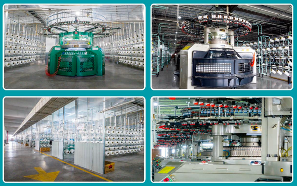
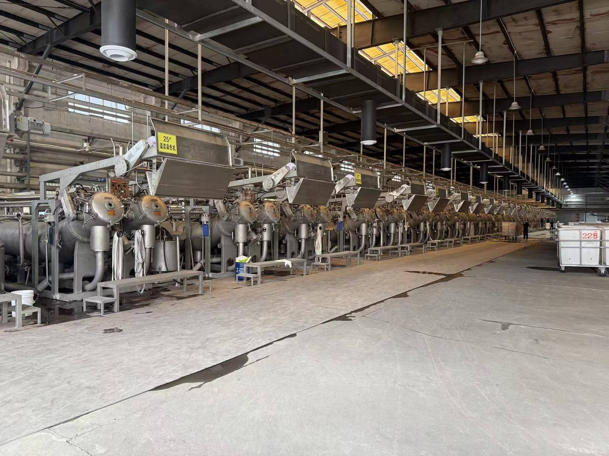
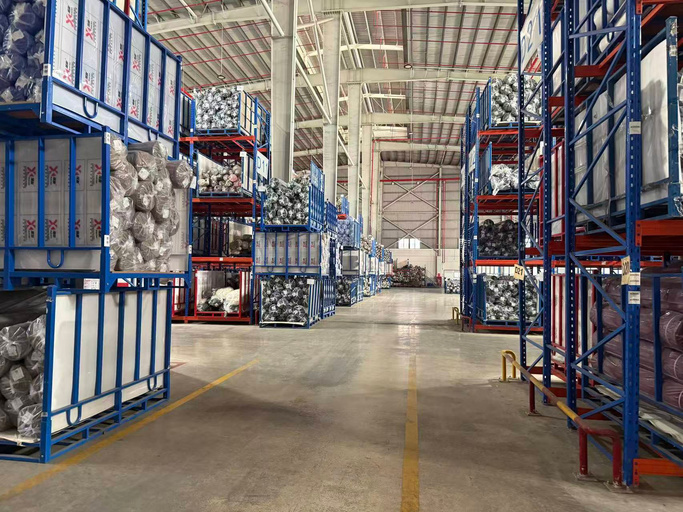
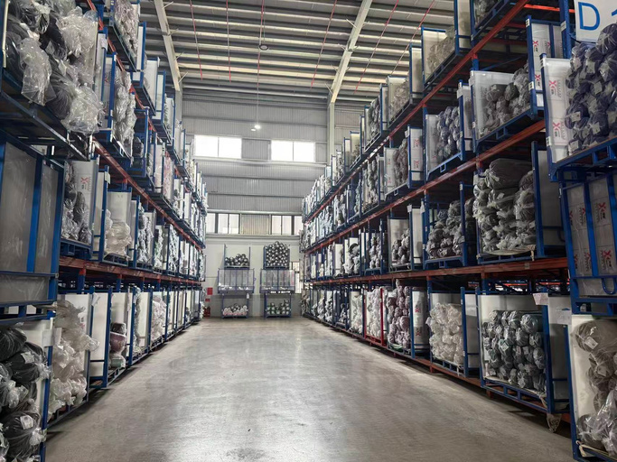

Four stages inside one company
Every metre is dyed and finished on our own floor, and every container is loaded here in Changshu. For volume spikes, we extend knitting to qualified partner mills under RyderTex QC — colour and hand never leave our building.

Knitting
Three hundred circular machines on one floor
Gauge and width decide what a mill can physically make. Six machine classes cover 18 to 40 gauge at 30 to 38 inch, so a 40-gauge open-width yoga fabric and an 18-gauge rib trim come off the same site. Single knit lines absorb five-times order spikes; double knit scales to 20,000 kg a day. For volume beyond our own 300+ machines, we extend knitting to qualified partner mills under RyderTex QC — every metre still comes back to our own floor for dyeing and finishing.

Dyeing
Three dye houses, each built for one fabric class
Colour is where most supply chains lose a week. Rather than one general-purpose plant, RyderTex runs three specialised houses, so an activewear lot and a nylon lot never queue behind each other. Combined capacity is over 100 tonnes a day.

Finishing
Hand is decided on the stenter
Two fabrics with an identical construction can feel nothing alike. Mechanical and chemical routes here set the surface: sand-wash, ultra carbon peach, sueding, raising and brushing, with fleece and sherpa printing handled in Unit 3.
Export
Inspected, rolled, container-loaded in Changshu
Finished fabric is inspected, rolled and loaded on site, 90 km from the Port of Shanghai. Dyeing, finishing and export never leave our floor, under one QC standard — so there's no window where a delay is somebody else's to explain.
Quality starts at the yarn source, before it reaches our floor
RyderTex specifies and sources yarn to a written programme — greige and dyed, standard and recycled — rather than spinning it in-house.

